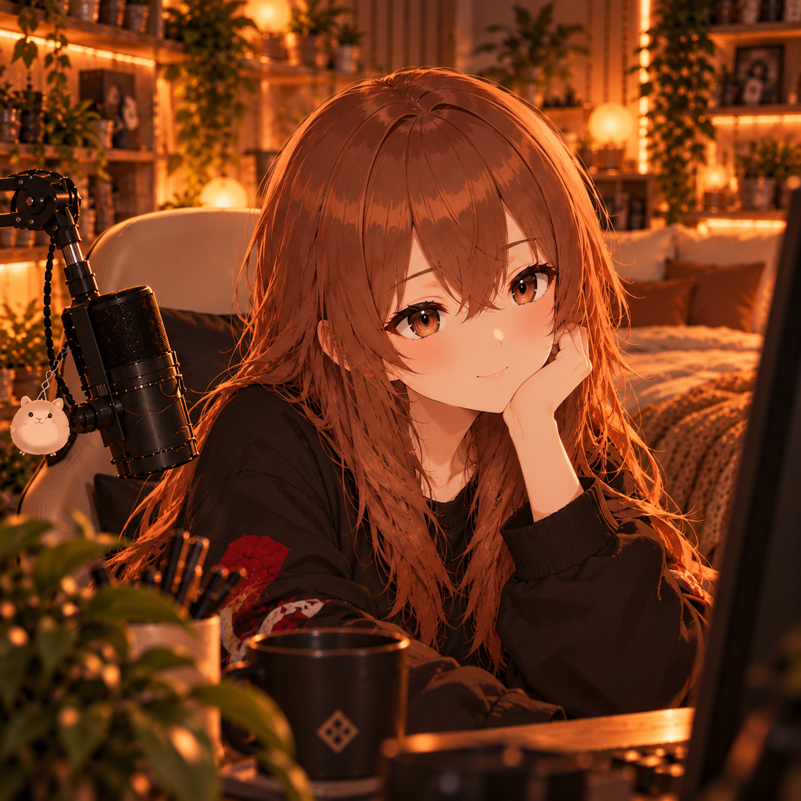

Привет, я Кэм
Впервые прохожу сюжетные игры и делюсь настоящими эмоциями. Без спойлеров, без токсичности и с уютной атмосферой.
Последняя серия
Загружаю информацию...

Впервые прохожу сюжетные игры и делюсь настоящими эмоциями. Без спойлеров, без токсичности и с уютной атмосферой.
Загружаю информацию...
